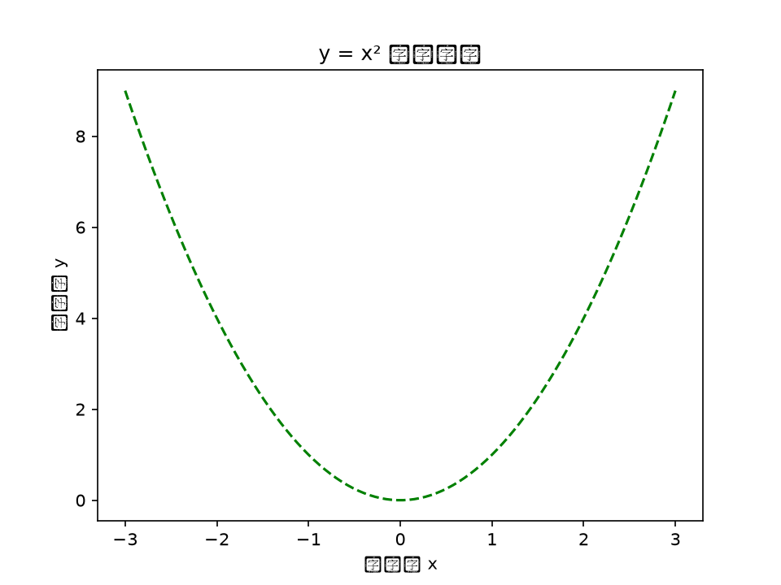
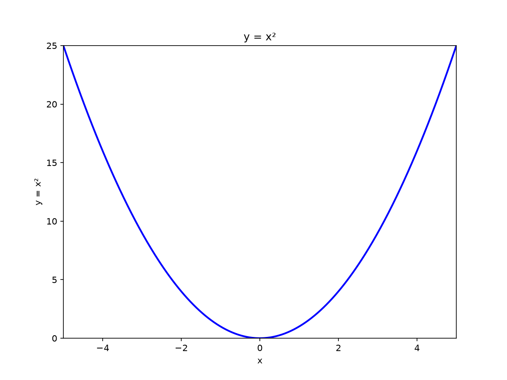

第 4 讲 提问的艺术：Prompt 基本功
从第 3 讲我们知道，大模型（LLM）是"按概率接话"的预测机器——而决定它往哪个方向接话的第一因素，就是你交给它的那段话：提示词（Prompt）。本讲开始进入模块 B（对话篇）：同一个模型，问法不同，答案天差地别。
一、本讲学习目标
完成本讲后，你应该能够：
- 说出提示词的四大基本功——具体明确、给足上下文、设定角色、规定输出——并用它们改写一条差提示词；
- 区分"指令"与"约束"，养成积极指令优先的提问习惯；
- 用 RTS（角色—任务—场景）框架和"提问六要素"速查卡，快速搭出一条信息完整的提示词；
- 对比评估不同问法的效果差异，并说明差异从哪里来。
二、课前准备
- 已注册并登录至少 2 个对话工具（智谱清言（GLM）、DeepSeek 等，互为备份——第 1 讲已完成）；
- 带上第 1 讲的《AI 使用日志》和第 3 讲的《AI 能力边界测试报告》：本讲要从日志里挑一条"最不满意的提问"当改写素材；
- 回顾第 3 讲的两个词：上下文窗口与幻觉——提示词的质量与这两件事直接相关；
- 课前小任务（5 分钟）：把你最近问 AI 的一条提问原封不动抄下来，课上要用。
三、核心概念精讲
1. 开场对比：同一个问题，三种问法
先看一组课堂现场实验（第 1 节开头会真的运行）。任务都是"介绍牛顿第三定律"：
问法 A（最常见）：
讲讲牛顿第三定律问法 B（补上受众与篇幅）：
我是大一学生，明天要向高中生科普。请用 300 字左右讲清
牛顿第三定律，并配一个生活中的实例。问法 C（再加上角色与结构）：
你是科技馆的科普讲解员。我是大一学生，明天要向高中生科普。
请用 300 字左右讲清牛顿第三定律：先给定义，再配一个生活中的
实例（如划船或火箭），最后用一句话点出常见误解——作用力与
反作用力作用在两个不同物体上，不会互相抵消。三次运行，模型的"聪明程度"没有变，变的只是输入的信息量：A 不知道讲给谁、讲多深、讲多长，只能按最常见的方式回答；B 补上了受众与篇幅；C 再补角色与内容结构——它甚至替你防住了一个高频误解。
这正是本讲的立足点：提示词是你与 AI 之间唯一的接口，接口上的信息量决定了输出的下限与上限。一句话：好的提示词可以减小大模型的幻觉与不确定性——提问水平，本质上是一种"信息给足不给足"的工程问题。
2. 四大基本功：把"想做的"翻译成"AI 能执行的"
四条基本功可以记成一个口诀：要什么（任务）＋给谁看（对象）＋凭什么答（背景）＋交付什么（格式）。每条配一个物理场景示例。
① 具体明确（任务 + 对象 + 场景 + 标准）
差：解释一下单摆
改写：面向高二学生，用 300 字左右解释单摆的"等时性"：
小角度摆动时周期与振幅无关，只由摆长决定；
并给出摆长为 1 m 时的周期估算过程（g 取 9.8 m/s²）。拆开看：任务（解释等时性）、对象（高二学生）、场景（科普讲解）、标准（300 字＋估算过程）。这条提示词里还藏着一个自查锚点：由 T = 2π√(L/g)，摆长 1 m 的单摆周期约 2.0 s——AI 若给出别的数，你立刻能发现。
② 给足上下文（背景 / 已知 / 要求）
我在用单摆测重力加速度。已测得：摆长 L = 99.8 cm
（从悬点量到摆球中心），用秒表测 30 个完整周期，
总时间 60.2 s。请你算出重力加速度 g，并判断结果是否合理。背景（在做什么实验）、已知（两行数据）、要求（算什么、判断什么）一次给齐——有了上下文，AI 才会"针对你的数据说话"，而不是背一遍教科书。注意"挑重点"：上下文窗口像容量有限的行李箱（第 3 讲），与本任务无关的寒暄会白白挤占有效空间。
还有一个经典例子，说明"上下文"也包括对话里已经说过的内容。单独问"LLM 是什么"，AI 很可能回答"法学硕士（Legum Magister）"——在法律语境里这确实是 LLM 最常见的含义；紧接着补一句"那在 AI 语境下呢？"，它立刻改答"大语言模型（Large Language Model）"。这一问一答就是"多轮补上下文"：第一问缺信息，AI 按概率给了最常见的含义（并不算错）；你补上语境，它就能对准目标。以后遇到答非所问，先想想是不是你的上下文没给够，再考虑追问一句、把背景补上——这往往比重写整条提示词更快。
③ 设定角色
你是大学物理课的助教，批改作业时习惯先肯定正确的部分，
再指出第一个出错的步骤，并用一个问题引导学生自己发现错误。①②说的是"这件事"，角色说的是"你是谁"：身份一定，之后所有回答都会带上这个人设的语气、深度与风格。同样问"哪里错了"，助教角色会引导你自己发现，而默认角色往往直接给出答案。
④ 规定输出（格式 / 长度 / 风格 / 受众）
请用一张 Markdown 表格对比"经典粒子"与"光子"的波粒二象性图像：
三列——问题、经典观点、量子观点；不超过 5 行；每格不超过 25 字；
表格后用一句话总结最核心的区别。格式（表格）、长度（行数与字数）、收尾（一句话总结）全部写死。规定输出的最大好处是"可直接用"：结果能直接进笔记、报告或 PPT，省掉二次整理。
3. 指令 vs 约束：先说"要什么"，再补"别什么"
指导 AI 输出的手段有两类：指令——明确说明希望得到的内容、格式、风格（"应该做什么"）；约束——划定不许做的范围（"不要做什么"）。研究与实践的共识是：积极指令通常比堆约束更有效——指令直接传达期望的结果，而约束可能让模型在禁区外"猜"；约束一多，还可能互相冲突。看一组物理化的对照：
积极指令版（说清要什么）：
用一段话（150 字左右）介绍单摆实验中需要测量的两个物理量：
摆长与周期。说明各用什么仪器测量，
以及为什么通常测 30 个周期取平均。约束版（只说不许什么）：
用一段话（150 字左右）介绍单摆实验。
不要写公式，不要讲历史，不要提误差。两版同样"简洁"，效果却完全不同：约束版只划了禁区，150 字里该写什么全靠模型猜，很容易写出一段正确的空话；积极指令版把"写什么、写到什么程度"直接说清。这就像布置实验任务——"测出摆长与周期，并说明为什么测 30 个周期取平均"人人能执行；"不许这样、不许那样"却让人无从下手。
当需求本身就是硬边界时——"单位必须用国际单位制""输出必须是表格""图像必须是 pdf 格式"——把约束明确写出来，恰恰是高质量提示词（第 14 讲你会大量见到这类硬性规格）。原则：先用积极指令说清"要什么"，再把必要的边界作为约束补上。
4. RTS 框架：角色、任务、场景
把③"设定角色"与②"给足上下文"合起来，就得到最省事的结构化提问起步框架：RTS＝Role（角色）＋Task（任务）＋Scenario（场景）。看一个原例：
# 角色
你是一位数学物理学家，在大学从事多年《数学物理方法》课程教学。
# 任务
请帮我详细讲解一下用级数法求解 Legendre 方程的步骤。
# 场景
我是一名正在学习《数学物理方法》的高年级本科生，
已经学习了微积分，复变函数和级数的基础知识。Legendre（勒让德）方程正是《数学物理方法》中用级数法求解的典型方程——球坐标下解静电势、氢原子的角向问题都会遇到它。逐行看信息走向：角色决定"按什么水平讲"，任务决定"讲什么"，场景里"已经学过什么"决定"从哪里讲起"——最后这半句，就是②"给足上下文"的化身。
还有一句很清醒的提醒：框架不一定带来更好的回答，但能提醒你"该给 AI 哪些信息"——像实验前的器材清单，防止漏带东西。
5. 两张随身速查卡
卡一：动作动词清单——提问时用动作动词开头，比"帮我看看"有效得多：
| 用途 | 常用动词 | 物理场景示例 |
|---|---|---|
| 布置产出 | 生成、创建、写作、描述 | "生成 5 道带解析的静电场练习题" |
| 分析检查 | 分析、解析、评估、识别、提取 | "逐步分析这段推导在哪一步用错了公式" |
| 比较组织 | 对比、比较、分类、归类、排序、组织 | "对比这三种测量方案的系统误差来源" |
| 查询检索 | 查找、检索、列出、推荐 | "列出 3 个演示角动量守恒的课堂小实验" |
| 转换处理 | 翻译、重写、总结、充当 | "把这段实验结论总结成一句话""充当面试官考我波动光学" |
| 数值推理 | 测量、计算、预测 | "计算摆长 0.5 m 的单摆周期，并预测摆长加倍后周期的变化" |
动词清单可自由组合使用。
卡二：提问六要素——写提示词前快速过一遍，缺哪条补哪条：
| 要素 | 回答的问题 | 示例（任务：高斯定理科普讲稿） |
|---|---|---|
| 背景 | 我在做什么、处在什么情境 | 社团招新宣讲，我负责一个 3 分钟小节 |
| 目的 | 要达成什么 | 让没学过大学物理的高中生对高斯定理有直观印象 |
| 风格 | 想要什么"味道" | 科普化，多打比方，尽量不出现公式 |
| 语气 | 什么情绪基调 | 热情、有悬念感 |
| 受众 | 讲给谁听 | 高二学生，已学过"电荷""电场"的初步概念 |
| 输出 | 交付什么形态 | 约 300 字讲稿，结尾附 1 个生活类比 |
六要素框架可按任务增减：小任务挑两三条即可；硬性要求（字数、格式、单位）作为"约束"补在最后——与本节第 3 点的原则一致。
6. 看看真实的好提示词长什么样
下面是两个成熟样例（教学转述）。注意观察它们的共同点：信息一样不缺，且都有明确的"交付标准"。
样例一 · 翻译：开篇即角色——"你是一个中英文翻译专家"，随后写明任务（中英互译）与质量标准（以"信、达、雅"为准，可调整语气和风格，兼顾词语的文化内涵与地区差异）。对照本讲：角色＋任务＋标准，一样不缺。
样例二 · 内容分类：一条结构化提示词，分节写明"智能助手定位、能力、知识储备（预定义的 10 个新闻类别）、使用说明"，并规定输出规则——只输出所属类别，不附加解释。这种"字段化"写法，正是第 5 讲结构化提示词的雏形。
7. 进阶技巧速览：四个小开关
| 技巧 | 怎么用 | 为什么有效 |
|---|---|---|
| 给示例（少样本提示，Few-shot） | 出题前先给 1 道你手写的"题目＋解析"当样例 | 模型会模仿示例的格式、难度与风格——给它一个"参照点" |
| 分步要求 | "先列提纲，我确认后再展开成文" | 中途可纠偏，避免一步到位跑偏（第 5 讲迭代的基础） |
| 让 AI 先反问 | 提示词末尾加一句"信息不足请先向我提问" | 把模型的"猜"变成"问"，消灭一大类翻车 |
| 允许说不知道 | 加一句"不确定的地方请直说，不要编" | 给模型"台阶"，降低硬编事实的风险（呼应第 3 讲） |
最后补一个"提问之前的开关"——这个问题该问 AI，还是该搜索？第 3 讲的"三连问"（要权威结论 → 搜索；找现成方案 → 搜索；开放冷门、网上没有现成答案 → 问 AI 当思想伙伴）在这里同样适用：AI 是强大的思想伙伴，但不是所有问题的最快入口。会提问的人，先选对提问的对象。
四、物理场景案例演示
下面三组"改写对照"来自三个真实场景：第一组来自一个真实的科研工具场景（顺便预告第 14 讲的 AI 开发——现在完全不需要看懂 Python，只需比较两份输入的"信息量"）；后两组是大学生最典型的两种问法，改写过程就发生在课堂上。
本页提示词均经真实执行：每条改写后提示词的输出见对应演示末尾的"真实运行结果"折叠区；Bad 提示词也照实运行（对比才有说服力）。执行环境与据实测回写进工单的优化点，见各折叠区首行说明。
差提示词：
请使用 python 画函数 y = x^2 的图像会发生什么：AI 只能自由发挥——比例、坐标范围、曲线颜色、保存格式全靠它猜，每次运行的结果都不一样。
改写后：
# 目标
请用 python 画出 y = x^2 的函数图像
# 要求
## 图片样式
- 长宽比 4:3，带图框（frame）
- x 轴范围：[-5, +5]
- y 轴范围：[0, 25]
- 曲线为蓝色实线
- 输出为 pdf 格式，另存一份同参数 png（便于网页与报告内嵌）
## 图内文字
- 标题与坐标轴标签用英文（绘图库默认字体不含中文，
图内直接写中文会显示为方框并报警告）
- 如需中文图内文字，先在程序中指定中文字体（如 SimHei）再绘图
## 文件存储
- script 目录存放 python 代码
- output 目录存放图像
- readme.md 放在根目录
## 其它
- 写一个 readme，包含程序的操作指南好在哪：①目标只有一个，写在开头；②"图片样式"其实是四条硬约束（坐标范围、线型、颜色、格式）——顺带验证一下：y = x² 在 x∈[-5, +5] 上的取值恰好是 [0, 25]，这份规格自洽得像一份实验规格书；③"文件存储"规定了交付物与存放位置——验收时逐条核对即可。"图内文字"与"另存 png"两处是真实运行后回写的：绘图库默认字体不含中文，图内写中文会变成一排方框并报警告（下方折叠区的 Bad 运行截图可见）；pdf 适合打印存档，网页与报告内嵌需要 png——工单里的每一条，最好都经得起一次真实运行的检验。一句话输入把"猜"交给了模型；结构化输入把"标准"还给了你。
预告：第 14 讲你会把这类提示词交给 AI 完整跑一遍开发流程；下面的折叠区先给出一次真实运行的前后对比。本讲先记住感觉：结构化输入＝把验收标准提前写进任务里。
▶ 真实运行结果：Bad 输出 vs Good 输出（含运行图）
Bad 输出（一句话提示词，模型自由发挥；每次运行猜的都不同）：

Good 输出（按上方工单逐条执行）：

差提示词（课后提问里出现频率最高的句式之一）：
帮我处理一下实验数据诊断：没说数据是什么、存在哪；没定义"处理"到底是算什么；没规定输出形态；没有判断对错的标准。——AI 只能回一篇"泛泛的实验数据处理建议"，句句正确，句句没用。
改写后（可直接复制）：
我在用单摆测重力加速度，数据在"单摆实验.xlsx"里：
A 列是摆长 L（单位 cm），B 列是 30 个周期的总时间 t（单位 s），共 5 组。
数据如下（对话里的 AI 读不到你电脑上的本地文件，请随提示词贴上数据
或上传文件）：
L (cm)：100.0，80.0，60.0，40.0，20.0
t (s) ：60.24，53.88，46.66，37.20，26.95
请你：
1. 由 T = t/30 求每组周期 T，再用 g = 4π²L/T² 求每组 g（先把 L 换算成米）；
2. 给出 g 的平均值；
3. 用表格输出，g 保留 3 位有效数字；
4. 指出哪几组数据可疑，并说明理由。好在哪：四要素全部在场——具体明确（算什么、用什么公式）、上下文（数据结构、单位、组数）、规定输出（表格、有效数字），外加一个验收抓手（"指出可疑数据"，逼 AI 认真看数据而不是硬算）。这个实验里 g 应落在 9.8 m/s² 附近；拿到结果后抽一组手算复核——这是物理学生的专业习惯（第 9 讲会把它正式化为对拍）。
▶ 真实运行结果：改写后提示词的输出
按 T = t/30、g = 4π²L/T²（L 已换算为米）逐组计算： | 组 | L (m) | t (s) | T (s) | g (m/s²) | | 1 | 1.000 | 60.24 | 2.0080 | 9.79 | | 2 | 0.800 | 53.88 | 1.7960 | 9.79 | | 3 | 0.600 | 46.66 | 1.5553 | 9.79 | | 4 | 0.400 | 37.20 | 1.2400 | 10.3 ⚠ | | 5 | 0.200 | 26.95 | 0.8983 | 9.78 | （t 为 30 个周期的总时间；表中 g 均保留 3 位有效数字） g 的平均值（5 组全用）：9.89 m/s² —— 被第 4 组明显拉高 剔除第 4 组后的平均值：9.79 m/s² 可疑数据：第 4 组。其 g（未取整为 10.27 m/s²）比其余四组的平均值 9.79 m/s² 偏高约 4.9%，远超其余各组之间的离散程度；T 偏小对应计时 偏短，最可能是漏计了周期，或开表/停表判据前后不一致。建议对该组 重测确认，而不是直接删掉了事。
差提示词：
帮我改一下这段实验结论，让它好一点诊断："好一点"没有标准——更学术？更简洁？还是只改语病？模型只能按最常见的"通用润色"处理，往往越改越"AI 腔"，甚至顺手"修正"你的数据。
改写后（可直接复制）：
下面是我实验报告"结论"段的原文。请把它改写成大学物理实验报告的学术风格：
1. 保留全部数值与单位，不得增删或修改任何数据；
2. 把口语化表述改为规范的测量表述；
3. 如涉及相对偏差，统一按 |测量值 − 参考值| ÷ 参考值 计算；
4. 改写后逐句列出"原句 → 改后句"，便于我逐句核对；
5. 除改写外，不要新增任何结论。
原文：
我们测出来的重力加速度是 9.78 m/s²，跟标准值 9.8 差不多，
说明实验挺成功的。好在哪：目的与受众（学术风格）给了"好"的定义；"不得增删数据""不要新增结论"是关键约束——在数据类任务里，这类硬边界比积极指令还重要，专防 AI"好心补数据"；"逐句对照"让改动可验收。第 3 条也是实测后补的：不说清计算式，AI 可能按测量值作分母，不同工具结果会不一致。顺带一个物理自查点：原文那句"跟标准值 9.8 差不多"并不规范——规范写法应给出相对误差，如 9.78 m/s² 与 9.8 m/s² 相比偏差约 0.2%，"误差来源与改进建议"另起一句讨论。
▶ 真实运行结果：逐句改写对照
1. 原句：我们测出来的重力加速度是 9.78 m/s²，跟标准值 9.8
差不多，说明实验挺成功的。
改后：本实验测得重力加速度 g = 9.78 m/s²，与参考值
9.80 m/s² 的相对偏差约为 0.2%，测量结果与参考值
符合较好，实验达到预期目的。
改写说明（未新增任何结论）：
- 数值与单位（9.78 m/s²、9.80 m/s²）原样保留，未增删、未修改；
- "跟标准值差不多"改为"相对偏差约为 0.2%"
（按 |9.78 − 9.80| ÷ 9.80 计算，保留 1 位有效数字）；
- "挺成功的"改为"实验达到预期目的"，语义不变；
- 未添加任何原文没有的结论——误差来源与改进建议如需讨论，
应在报告"误差分析"一节另行展开，不混入结论段。
▶ 真实运行：两条 Bad 提示词照实执行的效果（对照②③合并对比）
Bad ②"帮我处理一下实验数据"的输出：
好的！一般来说，实验数据处理可以按以下步骤进行： 1. 数据整理：将原始数据录入表格，检查有无漏记、错记和明显异常的数据； 2. 数据计算：根据实验原理计算目标物理量，如平均值、斜率、截距等； 3. 误差分析：计算平均值与标准偏差，区分系统误差与偶然误差； 4. 结果表达：按有效数字规则写出最终结果，必要时绘制数据图表。 如果你把具体数据发给我，我可以帮你进一步处理。
诊断印证：每句话都"对"，但没有一个数字与你的实验有关——它不知道你的公式、你的数据和"处理"到底指什么，只能回一篇正确的空话。
Bad ③"帮我改得好一点"的输出：
已为你润色，修改后如下： "通过本次实验，我们成功地完成了重力加速度的测定。实验过程 严谨有序，测量结果与理论值高度吻合，充分验证了实验原理的科 学性。这次实验不仅加深了我们对物理规律的理解，也锻炼了动手 能力与团队协作精神，收获颇丰。" 如果需要，我还可以把语气调整得更正式或更简洁。
诊断印证：9.78 m/s² 被润色没了（只剩"高度吻合"，与谁吻合、偏多少全无交代），还新增了原文没有的"团队协作""收获颇丰"——"AI 腔"与"好心改数据"双重翻车，正是改写工单里第 1、5 两条硬约束要防的事。
五、课堂实操任务单
动手之前，先花一分钟用"四要素＋六要素卡"自查：要什么？给谁看？已知什么？交付什么？每项提示词起点可直接复制，也鼓励改得更好——改好了记入提示词库。
每完成一项，在方框中打勾（勾选状态会自动保存）：
-
你是科技馆的科普讲解员，擅长用生活类比讲物理。 我是一名大二物理系学生，正在准备社团宣讲。 请用约 300 字给高二学生讲清高斯定理的直观图像： 说明"穿过闭合曲面的电通量只由内部电荷决定"这一结论的含义； 用一个生活类比帮助理解； 不出现微积分符号； 最后用两句话说明它在静电场计算中的用处。✅ 完成标准：输出中确实没有微积分符号（约束被遵守）；类比在物理上站得住——你能向同桌解释"为什么这个类比恰当"；篇幅约 300 字。
▶ 真实运行结果：按提示词生成的讲稿
执行说明：讲稿由 GLM 按上方提示词真实生成，全文约 300 字（含标点）；已自查：全文无微积分符号（约束被遵守）。物理准确性：净电通量只由内部净电荷决定 ✓；内部无电荷则净通量为零 ✓；点电荷场强 ∝ 1/r²、球面面积 ∝ r²，二者相乘与 r 无关，故通量与球面大小无关 ✓。类比的物理依据：无源的不可压缩流动，穿过任意闭合面的净流量为零——与"无电荷区域电通量为零"结构相同，类比恰当。同学们，想象一个渔网兜成的封闭口袋放进河流：口袋里没有水源， 流进多少水就流出多少，净流量为零；口袋里藏个小喷泉，它每秒喷出 多少，从口袋表面就净流出多少——净流量只由口袋里的水源决定。 静电场的高斯定理说的正是这件事：任取一个闭合曲面，穿过它的电通 量（可以想成电场线穿出的净条数）只由曲面内部包围的净电荷决定； 内部没有电荷，穿进多少就穿出多少，净通量为零。 这背后有个漂亮的道理：点电荷的电场按距离平方反比减弱，球面面积 却按距离平方增大，一弱一涨正好抵消，穿过球面的通量便与球面大小 无关。 它在静电场计算中非常有用。遇到球壳、圆柱、平板这类对称电荷分布 时，选一个贴合对称性的闭合曲面，就能一步求出场强，避开逐点叠加 的繁琐计算。
-
你是大学物理习题课助教。 请围绕"动量守恒与完全非弹性碰撞"出 5 道练习题： - 3 道概念判断题、1 道计算题、1 道联系生活的应用题； - 计算题数值取整数（子弹打入木块类），保证能整算； - 计算中用到的物理常数写明取值，结果保留 2–3 位有效数字； - 每题附完整解析，解析末尾注明该题考察的知识点； - 先列全部 5 道题，解析放在每题下方。✅ 完成标准：题型与数量和要求一致；解析中至少一处你已手算复核（若 AI 算错，指出并让它改正——第 3 讲的怀疑精神在这里用上）；格式整齐、可直接打印。
▶ 真实运行结果：5 道题＋解析（静电学主题演示）
执行说明：为与本讲案例呼应，本次执行把提示词第 2 行的主题替换为"静电场（高斯定理与静电平衡）"，其余骨架（题型配比、数值要求、解析要求、排版）原样保留——顺带验证了这类工单的可复用性：换主题只需改一行，课堂上你换回"动量守恒"即可。计算题数值已手算复核：E = kQ/r² = 9.0×10³ N/C，Φ = Q/ε₀ ≈ 4.5×10³ V·m，均准确。"常数写明取值"一条也是本次实测后回写进工单的优化——不写明 ε₀ 取几位，不同工具结果就对不上。【第 1 题 · 概念判断】判断："磁感线与电场线不同，它没有起点和 终点；因此穿过任意闭合曲面的磁通量总是零。"这个说法对吗？ 解析：对。磁感线构成闭合曲线（至今未发现磁单极子），穿入闭合曲 面的磁感线必定再穿出来，净磁通量恒为零。这与静电场不同：电场线 起于正电荷、止于负电荷，闭合曲面内可以包有净电荷，电通量便不为 零。 考察知识点：磁通量；磁场线的闭合性。 【第 2 题 · 概念判断】判断："高斯定理只对具有对称性的电场成立。" 解析：不对。高斯定理对任何静电场、任何闭合曲面都成立，它是电场 的普遍规律；对称性决定的是另一件事——能不能用它方便地求出场强 大小。只有电荷分布足够对称（球、柱、板），使所选曲面上场强大小 处处相同、方向处处垂直（或平行）于曲面时，场强才能一步解出。 考察知识点：高斯定理的成立条件与使用条件。 【第 3 题 · 概念判断】导体达到静电平衡后，下列说法正确的是： A. 内部场强处处为零，电荷只分布在导体表面 B. 内部仍可能残留少量电荷 C. 导体是等势体，但表面各处电势可以不同 D. 空腔导体的腔内（腔中无电荷时）场强不为零 解析：选 A。静电平衡时导体内部场强处处为零（否则自由电子会继续 定向移动），电荷只分布在外表面；整个导体（含表面）是同一个等势 体，C 错在后半句；腔内无电荷时腔内场强为零——这正是静电屏蔽， D 错。 考察知识点：导体静电平衡条件；静电屏蔽。 【第 4 题 · 计算题】半径 R = 10 cm 的均匀带电球壳带电量 Q = 4.0×10⁻⁸ C。求：(1) 距球心 r = 20 cm 处的场强大小； (2) 球壳内距球心 5 cm 处的场强大小；(3) 以球心为中心、半径 20 cm 的球面上的电通量。 （取 k = 9.0×10⁹ N·m²/C²，ε₀ = 8.85×10⁻¹² C²/(N·m²)） 解析：(1) 球壳外场强与全部电荷集中于球心的点电荷等效： E = kQ/r² = 9.0×10⁹ × 4.0×10⁻⁸ ÷ (0.20)² = 9.0×10³ N/C， 方向沿半径向外。(2) 球壳内（r < R）场强处处为零：取球内任意同心 球面，面内无电荷、通量为零，由对称性得场强为零。(3) 由高斯定理 Φ = Q/ε₀ = 4.0×10⁻⁸ ÷ 8.85×10⁻¹² ≈ 4.5×10³ V·m；通量只取决于 面内电荷，与球面半径无关。 考察知识点：高斯定理求对称带电体的场强；球壳内外场分布。 【第 5 题 · 生活应用】雷雨天为什么"躲在汽车里"相对安全？ 解析：车身是金属导体。雷电击中车身时，车体电荷迅速重新分布并达 到静电平衡：电荷只分布在车体外表面，车体内部（含车厢）场强近似 为零，电流主要沿外表面导入大地——"法拉第笼"式的静电屏蔽。注 意：起保护作用的是金属壳体，而不是橡胶轮胎的"绝缘"——雷电压 足以击穿轮胎，"轮胎隔电"是以讹传讹。 考察知识点：静电平衡与静电屏蔽的实际应用。
-
你是一位苏格拉底式的物理系助教。 下面是我对证明题的解答（发我时请把题目原文和完整解答一并发来， 否则你看不出我是否答在点上）。请你逐步检查： - 如果某一步有问题，不要直接给出正确步骤，只提示 "第几步、什么性质的错误（概念/计算/逻辑）"； - 每次只给一条提示，等我修改后再继续； - 如果整份解答正确，请明确说"无需修改"， 并指出一个可以写得更严谨的细节。✅ 完成标准：AI 全程没有泄露答案；你至少完成一轮"提示 → 修改 → 再检查"；结束时你能说清原稿错在哪一步、属于什么性质的错误。
▶ 真实运行结果：两轮批改全过程
执行说明：含错原稿按学生作业中最高频的概念错误编写——把"合外力为零"错当成机械能守恒的条件（第 2 步，全文仅此一处错误）；两轮 AI 回复均由 GLM 按上方提示词真实生成：第一轮只指出"第 2 步、概念性错误"并给一个引导性问题，未泄露任何正确步骤；第二轮确认修改并给出一个严谨性建议。整个"提示 → 修改 → 再检查"闭环，恰好演示完成标准要求的那一轮。【发给 AI 的内容】 题目：证明：两物体发生完全非弹性碰撞后，系统动量守恒， 但机械能不守恒。 我的解答： 设质量 m₁、m₂ 的两物体沿同一直线运动，碰前速度分别为 v₁、 v₂，完全非弹性碰撞后合为一体，共同速度为 v。 第一步：碰撞时间极短，内力远大于外力，外力冲量可忽略， 系统动量守恒：m₁v₁ + m₂v₂ = (m₁+m₂)v。 ……（a） 第二步：碰撞过程中系统不受外力，外力对系统做功为零， 没有外界能量输入，所以系统机械能守恒。 第三步：由（a）得 v = (m₁v₁+m₂v₂)/(m₁+m₂)，代入碰后动能 Ek′ = ½(m₁+m₂)v² = (m₁v₁+m₂v₂)²/[2(m₁+m₂)]， 比较可得 Ek − Ek′ = m₁m₂(v₁−v₂)²/[2(m₁+m₂)] ≥ 0， 等号仅当 v₁ = v₂ 时成立，故碰后动能减少，机械能不守恒。证毕。 ────────────────────────────── 【AI 回复 · 第一轮】 已逐步检查。 第 1 步：思路与方程都正确——"内力远大于外力，故外力冲量可 忽略"，正是动量近似守恒的依据。 第 2 步：有问题，属于概念性错误；而且它的结论（机械能守恒） 与你第 3 步的结论（机械能不守恒）直接矛盾，请先修改这一步。 提示（只给这一条）："合外力为零，所以机械能守恒"这条推理链 缺了一环。请回想：机械能守恒的条件是关于"什么力做的功"说的？ 在完全非弹性碰撞里，真正把动能"拿走"的，是外力还是内力？ 把修改后的第 2 步发给我，我们再继续。 ────────────────────────────── 【我的修改 · 第二轮输入】 第二步（修改版）：机械能守恒的条件是"除重力、弹力外，其他力 做的总功为零"。碰撞中使物体形变的是内力，属于耗散性内力：两 物体互相挤压并发生永久形变，内力做的总功为负，一部分动能转化 为内能（热），所以机械能不守恒。 ────────────────────────────── 【AI 回复 · 第二轮】 这一版没有问题：条件表述正确（机械能守恒看的是重力、弹力之外 的力做的总功），也点明了碰撞中内力做负功、动能转化为内能的机 制。结合你正确的第 1、3 步，整份证明成立——无需修改。 一个可以写得更严谨的细节：第 1 步"内力远大于外力"之后，可补 半句"故系统可近似视为不受外力"，让动量守恒从近似条件出发的 逻辑链条更完整。
自查：原稿第 3 步的动能差公式 ΔEk = m₁m₂(v₁−v₂)²/[2(m₁+m₂)] 经数值验证无误（如 m₁=2 kg、m₂=1 kg、v₁=3 m/s、v₂=1 m/s 时 ΔEk = 1.33 J）——原稿唯一的错误在第 2 步。
因为"引导式讲解"的本质就是"不做什么"——这是约束不可替代的少数场景之一。回想第 3 节的原则：积极指令优先，约束守硬边界；而"不剧透"正是一条名副其实的硬边界。第 6 讲的"习题教练"任务会继续使用这一招。
六、常见坑与翻车案例
- 坑① 一句话开局，全程靠猜："帮我写个东西"——AI 按最常见模板交差，结果"对所有人都对，对你没用"。解法：四要素过一遍，缺哪条补哪条。
- 坑② 只说"不要"，不说"要"：满屏"不要……不要……"，模型在禁区外乱猜，写出一段正确的空话。解法：积极指令优先，约束只守硬边界。
- 坑③ 受众错位：让 AI"讲点量子力学"，它直接写开了算符——因为你没说讲给谁。解法：把"受众"当必填项（六要素卡）。
- 坑④ 一次贪五件事：同时让 AI 出题、写解析、排版、起标题、写导语——每件都是半成品。解法：拆步骤、分轮次（第 7 讲正式学任务分解）。
- 坑⑤ 第一版即终稿：不满意就换工具重问，而不是在同一轮对话里纠偏。解法：追问、纠偏、让 AI 自评——这是第 5 讲"迭代三板斧"的预告。
七、自测
1. "你是大学物理课助教。请用 200 字以内、面向大二学生总结高斯定理的两种典型应用。"这条提示词同时体现了哪几项基本功？
- 只有"设定角色"
- 只有"规定输出"
- 设定角色 + 具体明确 + 规定输出（受众与篇幅都含在内）
- 它体现的是"上下文窗口管理"
查看答案
C。"你是大学物理课助教"是角色；"总结高斯定理的两种典型应用"是具体任务；"面向大二学生"是受众、"200 字以内"是篇幅规定。
2. 下面哪一条属于"积极指令"？
- "不要写公式"
- "不要超过 300 字"
- "用 300 字给高二学生讲清单摆的等时性，并给出摆长 1 m 时的周期估算过程"
- "不要讲历史"
查看答案
C。它直接说明了"写什么、给谁、写多长、写到什么程度"；A、B、D 都是约束。原则：积极指令优先，约束只守硬边界。
3. 在 RTS 框架中，"我是一名正在学习《数学物理方法》的高年级本科生，已经学习了微积分、复变函数和级数的基础知识"属于哪个要素？
- Role（角色）
- Task（任务）
- Scenario（场景）
- 都不是，这是输出格式要求
查看答案
C。场景说明"我是谁、已经会什么"，决定 AI 从哪里讲起——它就是"给足上下文"在 RTS 里的化身。
4. 判断题："提示词越短越好，写得长说明不会提问。"
查看答案与解析
不对。"简洁"指不堆无关信息（寒暄、客套），不是信息不足。该给的目标、背景、对象、格式一条都不能少——对照本讲改写对照①：一句话输入省下的只是打字时间，代价是把所有决定权都交给了模型的"猜"。
5. 简答：用四大基本功把"讲讲波动"改写成一条面向初中生的提示词（写出 2–3 句即可）。
参考答案（要点）
开放题，四要素到位即可。示例方向：具体明确——讲"什么是波的频率与振幅"；上下文——初中生已知道声音与光的基本现象、不懂三角函数；角色——"你是初中科学课老师"；规定输出——200 字以内、配一个水波类比、不出现公式。凡四要素齐备、表述清楚的改写均可。
八、课后作业
收集 5 个差提示词（来源：你的《AI 使用日志》、同学的翻车案例、课堂任务中不满意的第一版），逐条完成四步：
- 抄录差提示词原文；
- 用四要素（或六要素卡）改写，注明用到了哪些要素；
- 把两版分别发给同一个 AI 工具，截图对比前后效果；
- 各写一句话说明"差异从哪里来"。
练习表可按下表整理（第 1 行为示例）：
| 编号 | 差提示词原文 | 改写后提示词 | 用到的要素 | 前后效果（一句话） |
|---|---|---|---|---|
| 示例 | 帮我改一下这段实验结论，让它好一点 | （见本页改写对照③） | 目的＋受众＋约束＋输出 | 泛泛润色 → 逐句可核对，数据零改动 |
| 1 | ||||
| 2 | ||||
| 3 | ||||
| 4 | ||||
| 5 |
提交物：练习表一份（含 5 组前后对比截图）。
本作业比拼的正是"怎么用 AI"，但按课程《学术诚信与 AI 使用规范》，仍需附《AI 使用声明》：用了哪些工具、分别做了什么、你如何核对效果。顺手把这 5 组改写记入《AI 使用日志》——从这一讲起，你的个人提示词库开始积累，第 5、6 讲会继续往里放东西。
九、进阶拓展（选学）
🎓 进阶拓展：提示词的"上下文账本"、更多框架与官方样例库
上下文的账本。在同一个对话框里，你的每条提示词、AI 的每条回答、上传的文件，都占用同一个上下文窗口；聊得越久，开头的内容越可能被"挤出"——第 3 讲见过的"吃书"就是这么来的。两个实用习惯：重要约定（角色、格式）在关键提问里重申一遍；一个话题聊完就开新对话，别让无关历史污染上下文。
框架不止 RTS。还有 CO-STAR（Context 上下文 / Objective 目标 / Style 风格 / Tone 语气 / Audience 受众 / Response 响应）等。你会发现 CO-STAR 与本讲"提问六要素"几乎一一对应——再次印证：框架的价值不在"咒语"，而在防止漏信息。
去官方样例库逛一圈。DeepSeek 提示词库收录了代码改写、翻译、内容分类等十余个样例，每个都展示"系统提示＋用户输入＋输出示例"的完整写法，适合照着抄骨架：api-docs.deepseek.com/zh-cn/prompt-library（样例以官方页面为准）。
下一讲预告。第 5 讲《结构化提示词与迭代优化》将把本讲的四要素升级为七字段模板，并教你"迭代三板斧"——让提示词从"一次性用品"变成可复用的资产。